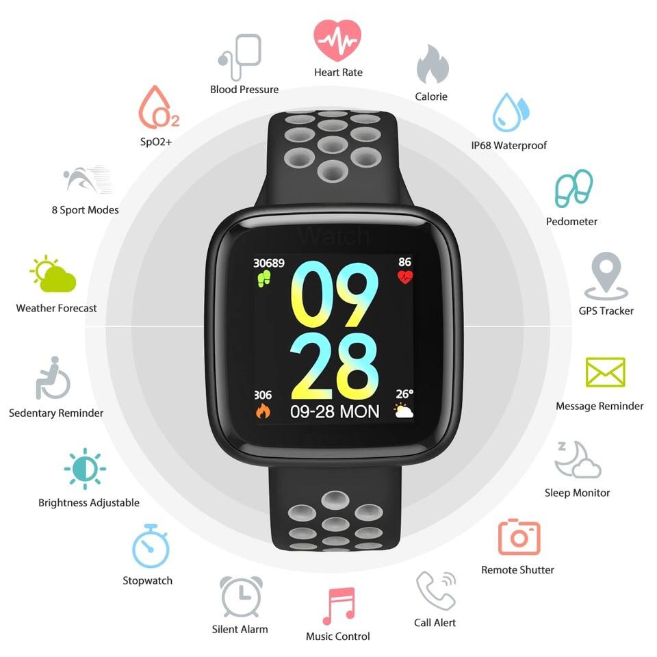
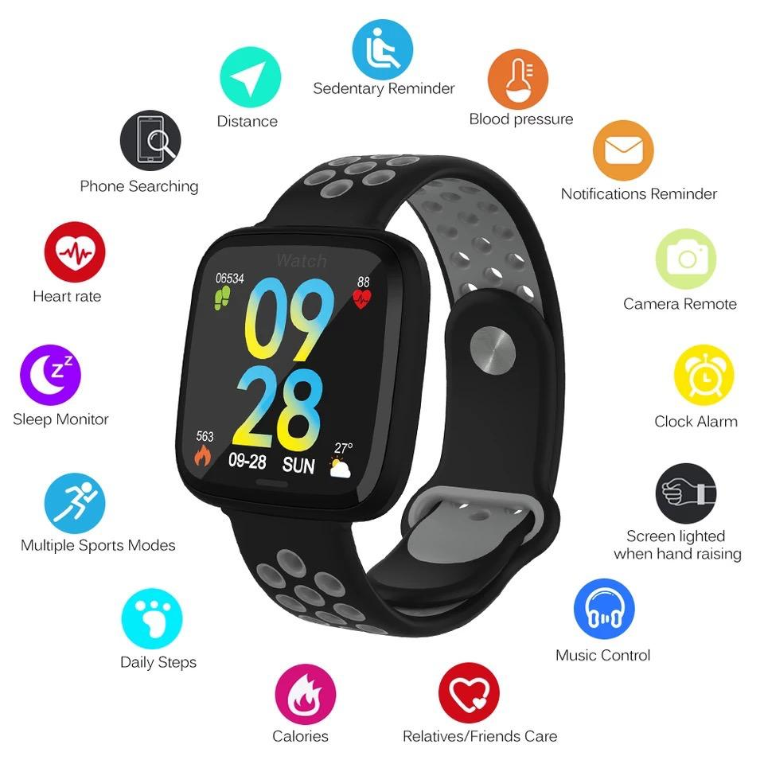

Generic
It seems everyone is wearing one nowadays. As a matter of fact, over 12,765 Nigerians currently own either a smartwatch and/or a fitness bracelet. Most smartwatches are very fragile, with short battery life and completely incompatible with tough, physical activity e.g swimming.
However, due to a breakthrough in digital technology, there's a trendy apple-inspired new type of smartwatch with a very colourful LED screen that's super robust (nearly shatterproof) and yet very stylish!
What is it?
A smartwatch specially designed to be a a great partner for you, perfect for your day-to-day life, especially for your physical activities. It's packed with functions and a colourful big screen, which makes its cost-effectiveness one of the best in the smartwatch category.